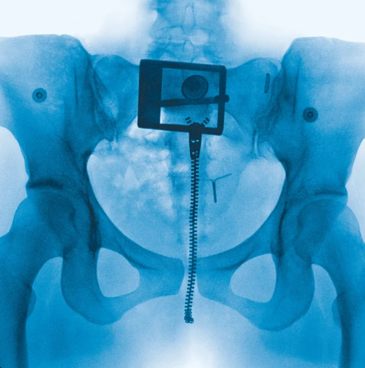
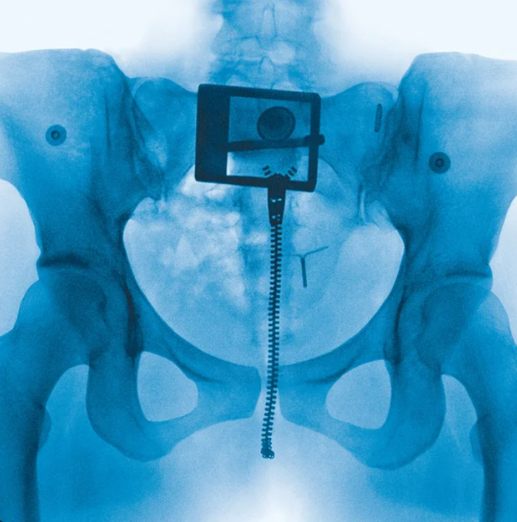
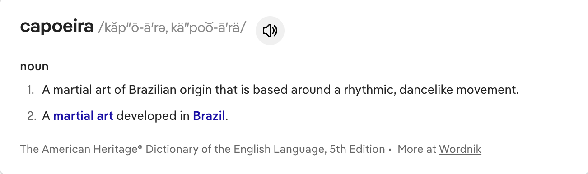
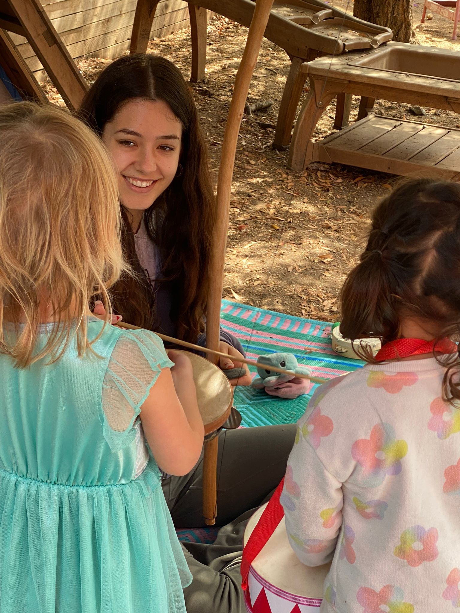
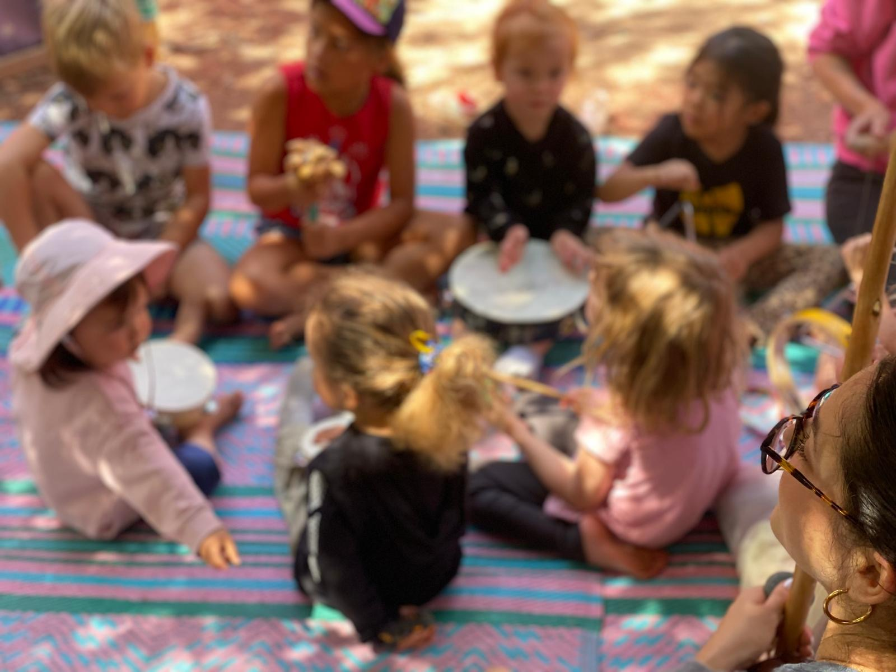
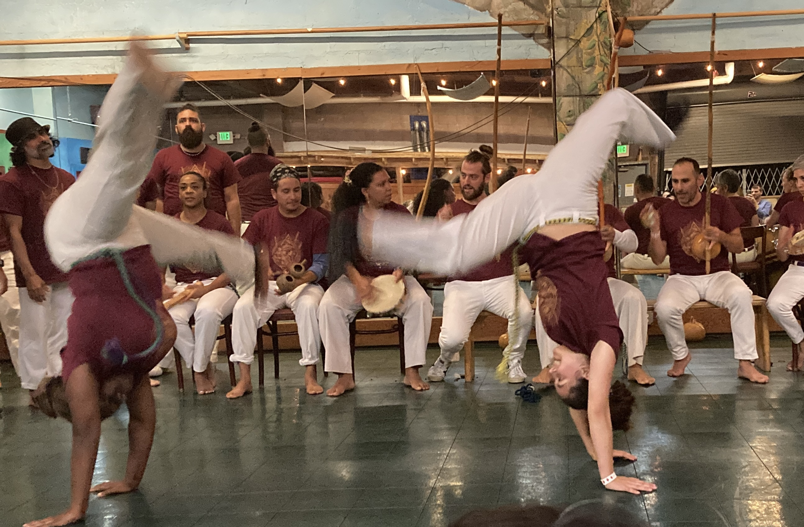
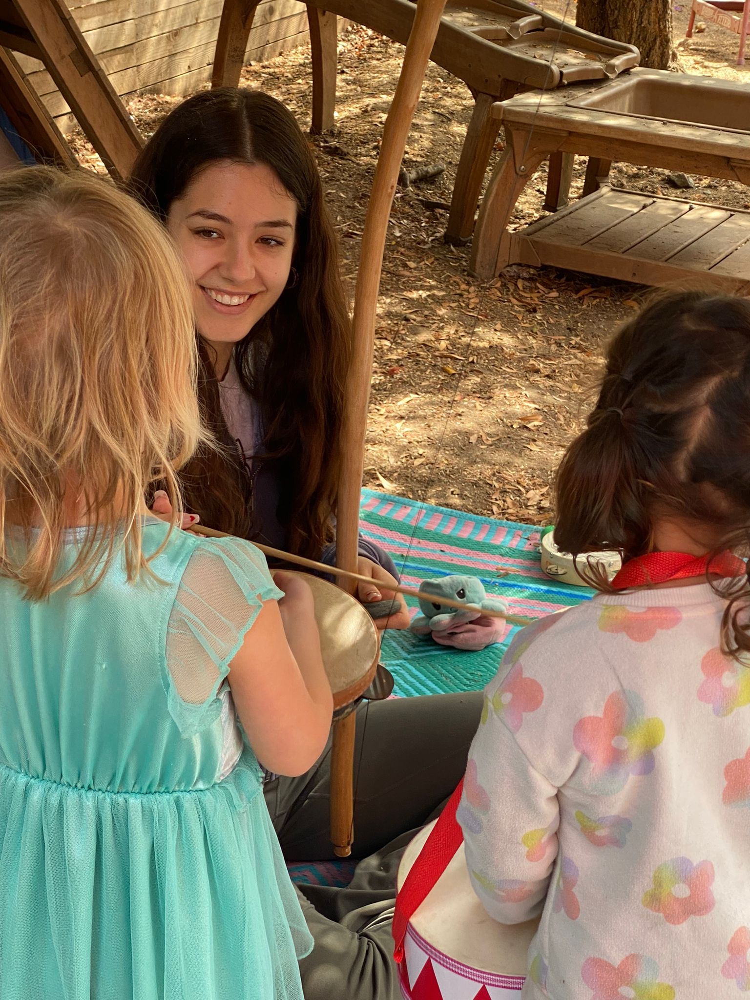
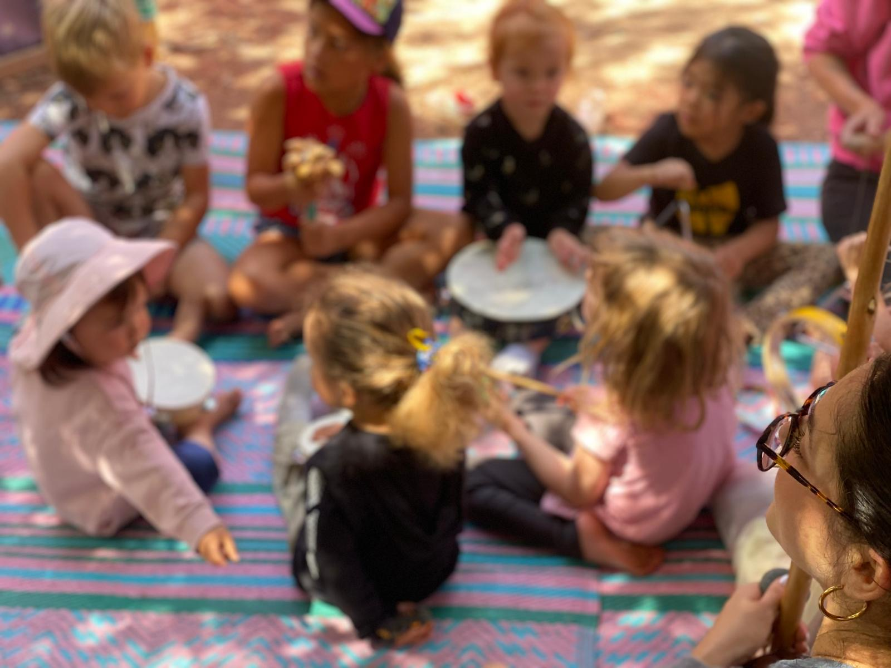
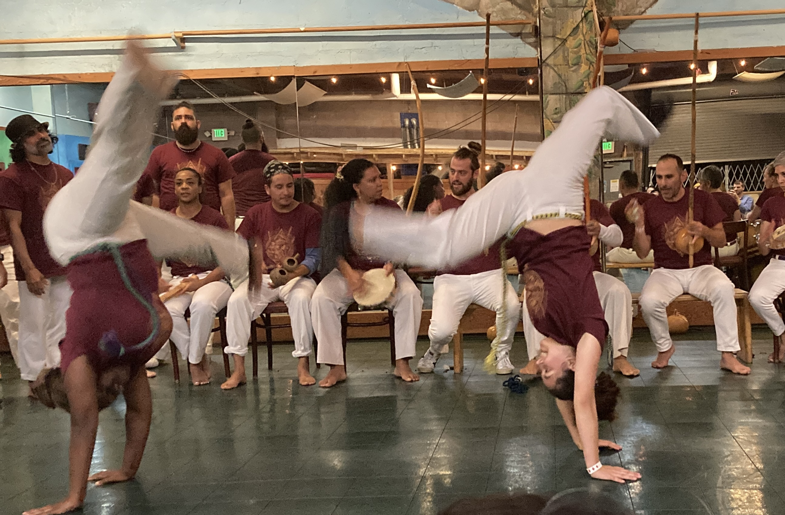

Hey there,
I'm Zadie.
I’m Zadie Moon and my love for tech started before I even had access to it.
Growing up in a home without screens, I was instantly curious about the digital realm and how it impacts our lived experience.
This curiosity never went away; today it drives my exploration at the crossroads of AI and design ~ technology to feel and be more human and accessible. I organize
Tech Intersections, a conference amplifying underrepresented voices in tech and advise the Google Developer Group in Oakland, building
community around innovation. My path began with a passion rooted in Public Health and persists through my approach to human-centered design.
Outside of work and school, I’m a swimmer, martial artist, capoeira teacher, surfer, hiker, and traveler.
I love cooking, trying new foods, thrifting, shell collecting, 3D printing, making jewelry, and playing music. For me, every passion—whether
it’s movement, art, or building something with my hands—shapes how I design, lead, and imagine what technology can be.
Resume
Community.
Founder & Lead Organizer
Google Developer Group — August 2024 to December 2025
Founded the Google Developer Group on campus and scaled it into a thriving tech community. Led a 10 person organizing team to deliver hackathons, conferences, and AI/ML workshops for 2,000+ students. Moderated industry panels and built partnerships with tech companies including Google, Salesforce, Apple, Pinterest, BIOMade, Amaryis, and more to expand engagement, while securing sponsorships and coordinating logistics that increased funding and participant outreach by 95%.
Product Fellow (Civic Tech)
City of Oakland - Democracy Dollars Program — September–December 2025
Supporting the City of Oakland’s Democracy Dollars program, a public campaign finance initiative giving each resident $100 in vouchers to support local candidates. Conducting user research and design analysis to ensure the platform is trustworthy, private, and accessible for our diverse Oakland populations, including non-English speakers.
Why it matters: In Seattle, Democracy Dollars increased campaign donors by 300% and made voter turnout four times higher among participants. The program expands access for candidates from all backgrounds and builds public trust through transparency and community participation.
Organizer & Speaker
Tech Intersections — January 2025 to Present
Now in my third year with the conference, I’ve moved from speaker to Partnerships Organizer, where I help curate the full program — selecting speakers, shaping tracks, coordinating logistics, and ensuring inclusivity in all aspects of planning. As part of this role, I lead panels, vet proposals, and oversee partnerships with sponsors and community groups. Tech Intersections is an annual conference held at Northeastern University’s Oakland campus, dedicated to centering Black, Latina, Indigenous, Southeast Asian, Middle Eastern and other underrepresented women, nonbinary, and transgender folks in technology.
Other.
What I'm listening to
 


My life passion

I first stepped into the Roda at 7 years old, drawn to capoeira’s rhythm and energetic exchange.
The martial art, rooted in a dance of resistance, emerged as a form of self-defense and a celebration of identity for Afro-Brazilians, and has evolved modernly as an expression of resilience and connection.
Part fight, part music, part dance, capoeira is a dialogue of movement that demands openness, flexibility, and trust.
Over the years, it has taught me to release control and live fully in the moment, to listen not just with my ears but with my body.
Now, I find joy in teaching its intricate steps and songs to kids and adults, passing forward an art form that embodies strength, creativity, and control.
 




